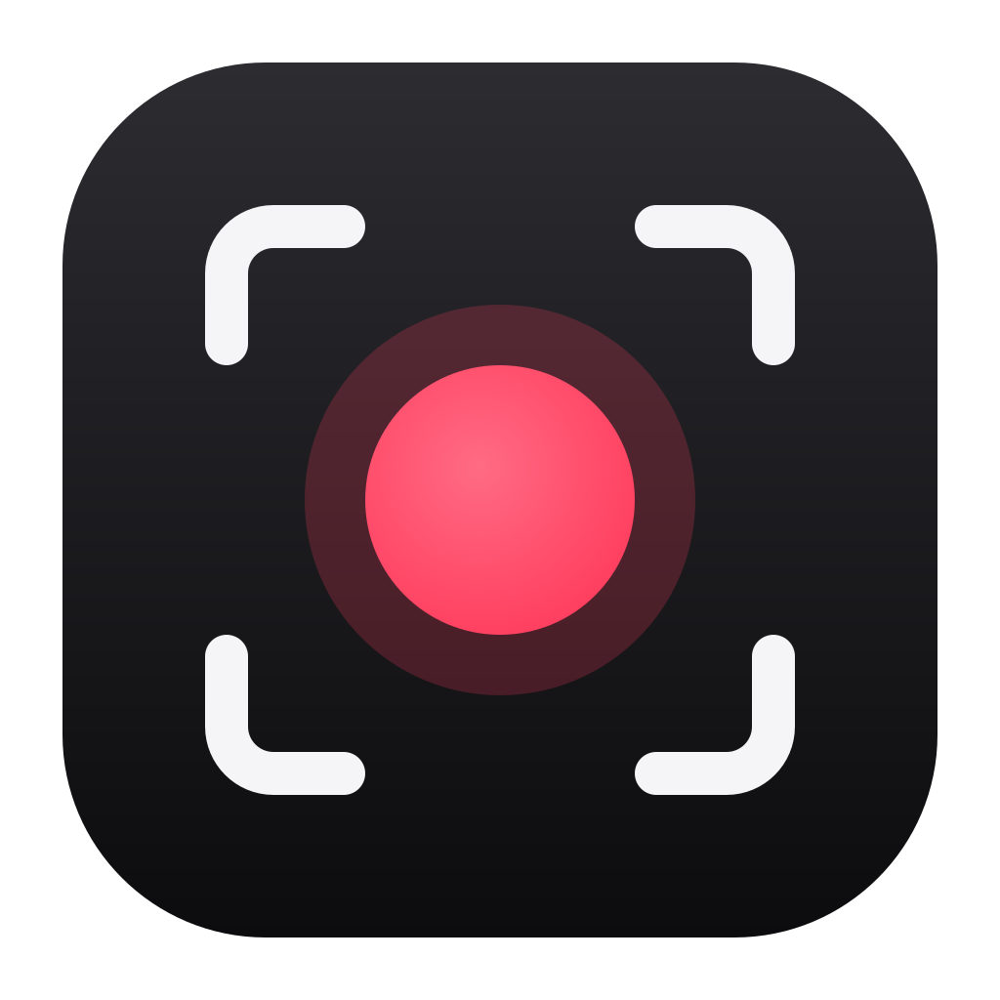

A native macOS recorder for async video — and an MCP server so Claude Code, Codex, Cursor and other agents can record, demo and share their work, with you in charge.
AI agents now do real work on our computers. They need a way to show what they did, and people need to see it before anything leaves their Mac. Takely is the screen recorder people and their agents share, built on four promises:
Recording is always visible. Demo plans run only after you confirm. Nothing is published until you've seen the preview and every word that goes with it — and "no" is final.
An agent's share is a sealed copy, checked part by part as it uploads, with no text hidden inside the video. Secrets found on screen block it until you review them.
Recording, captions and AI run on your Mac. Videos go only to your own storage. No account, no Takely cloud, no tracking.
The recorder, the agent server and every safety check are open source (AGPL-3.0). The promises can be verified, not just trusted.
Pure Swift, built on Apple's frameworks — no web runtime.
A display, a window or an area, a draggable camera bubble, system sound and your mic — speaker echo removed live.
An invisible prompter, an "oops" key that takes back your last sentence, markers that become chapters, drawing on screen.
Upload to your own Cloudflare R2, S3 or B2 bucket: a clean player page with previews.
Add Takely's MCP server once (Settings › Automation has these for wherever it's installed):
claude mcp add takely -- /Applications/Takely.app/Contents/Helpers/takely-mcp codex mcp add takely -- /Applications/Takely.app/Contents/Helpers/takely-mcp
Then ask: "Record a short demo of this change, check the frames, and add the link to the pull request."